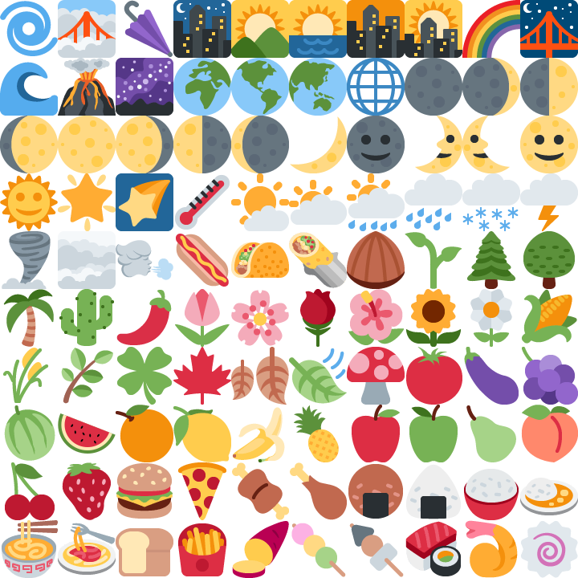

Mobile is roughly 60 to 64% of web traffic, and the median mobile page loads 13 images at a median of 12 KB each [8, 46]. An image is the Largest Contentful Paint element on 73% of mobile pages, yet only 43% of mobile sites pass all three Core Web Vitals [8], so image delivery is the headline performance metric and most sites fail it. Chat and social apps push this to the extreme, rendering hundreds of emoji, reaction icons, and avatars, and marketplace feeds render grids of small product and profile thumbnails, all viewed over cellular links where round-trip latency, not bandwidth, sets load time [48, 49]. Current guidance says serve each image individually, preferably as WebP, and trust HTTP/2 multiplexing to hide the request count. We show that for this asset class both defaults leave savings on the table, and we measure what to do instead.
Across the codecs that carry most web images (JPEG, PNG, WebP) plus AVIF, at matched per-tile quality, bundling many small tiles into one atlas recovers up to 30% of bytes under JPEG and up to 33% under AVIF, reaches 42–68% for flat-art icon and emoji sets packed as lossless strips (and up to 97% with a shared palette), and saves up to 50% under JPEG on deduplicated avatar walls. The effect is codec-specific: a naive WebP atlas of larger photographs adds bytes, because VP8 shares one whole-frame quantizer, so the sign flips with tile size. A study of 1,056 validated cold browser loads under emulated network profiles including loaded and lossy 4G links shows request collapse cutting time-to-visible by 4.5 to 8.6x on HTTP/1.1 and up to 7.7x on HTTP/3 for 500 flat-art tiles, while HTTP/2 sits near parity and the case there is the byte saving, and a default HTTP/3 stack sustains only four to six concurrent streams. We unify the results in a coupling account (savings come from sharing fixed per-file costs, losses from sharing adaptive coding state), show that cheap source-image features do not predict the byte effect while a probe encode of ten to twenty tiles forecasts it to within about two percentage points, and release an open-source tool that routes each group to its byte-optimal, quality-gated representation, matching an offline oracle on five unseen collections. In a live renderer the pixel atlas is also fastest to full visibility and lowest in memory.
Mobile is now 60 to 64% of web traffic [46], and the median mobile page loads 13 images, 99.9% of pages loading at least one, at a median of 12 KB each [8]. Most of that payload is small tiles: the single largest image on the median mobile page is only about 135 KB [8], and the remaining dozen are far smaller. Image delivery is also the metric users are judged on, an image is the Largest Contentful Paint element on 73% of mobile pages, yet only 43% of mobile sites pass all three Core Web Vitals [8], and a tenth of a second of mobile speed-up has been measured to raise retail conversions by 8.4% [50]. The binding constraint on these pages is latency, not bandwidth: raising a link from 5 to 10 Mbit/s cuts page-load time about 5%, while each 20 ms of round-trip reduction cuts it 7 to 15% [48, 49], and three quarters of the world's mobile subscriptions are still 4G or slower [47].
Combining many small images into one, the CSS sprite technique, was standard practice in the HTTP/1.1 era and fell out of favor when HTTP/2 multiplexing removed the per-connection request bottleneck. That reasoning holds for load time on a fast, low-loss HTTP/2 link, but two things limit it on the cellular tail: HTTP/2 multiplexes every stream over one TCP connection, so under loss a single lost segment can stall all of them [12, 36], and the loss-resilient successor HTTP/3 is still only about 20% of traffic [51], so much of the tail is HTTP/1.1 or a stack that under-multiplexes. The request-count argument also addressed only latency. Two byte-level costs survive multiplexing untouched: every image file carries a fixed container overhead (headers, quantization tables, ISOBMFF boxes), and every file boundary prevents the codec from sharing entropy context, palettes, and predictors across images.
JPEG, PNG, and WebP anchor the study: together they carry over 70% of images served on the web (HTTP Archive 2024: JPEG 32.4%, PNG 28.4%, WebP 12.0%), decode in every browser, and are where the practical savings live. AVIF, the leading next-generation codec, joins the photographic crossover (Section 5.1) to show the result's codec-dependence against a modern container. The three formats price the per-file costs very differently: a JPEG file carries, with the libjpeg-turbo encoder and settings used here, roughly 600 bytes of Huffman and quantization table definitions plus headers (the exact figure is encoder- and settings-specific), a PNG a 67-byte structural floor plus per-scanline filter adaptation, and a WebP as little as 30 bytes of container around a heavily image-adapted VP8 payload. This paper quantifies what bundling recovers, per codec, tile size, and image count, under a matched-quality protocol, and describes a testbed that measures the timing consequences under HTTP/1.1, HTTP/2, and HTTP/3.
The regimes this study measures map onto concrete page types. Product grids and image-search results serve 100–280-pixel photographic thumbnails by the dozens; recommendation strips, cart previews, and avatar rows serve 48–96-pixel photos; emoji and reaction pickers serve 24–64-pixel flat art by the hundreds, and are one place where sprite atlases remain in production use today (chat applications ship emoji sheets; video platforms ship hover-preview storyboards as frame mosaics). The tile-size axis of the experiments spans exactly this range, so each regime can read its expected saving off the measured curves. A single mobile screen routinely mixes both, flat-art tiles and small photographs, which have opposite coding needs, so no one codec or layout is right for the whole page; the per-group measurement this paper develops is what resolves the mix.
The display side needs no special machinery: several standard CSS and DOM mechanisms crop a tile from a decoded atlas (Section 3.1), which the browser decodes once and paints windows into.
Contributions. This paper contributes (i) a matched-quality sweep of image atlasing across the three universally supported web codecs (JPEG, PNG, WebP) over tile size and image count, establishing that the byte saving is governed by the ratio of per-file structural cost to content bytes; this is the first published measurement of atlasing byte savings resolved by codec and tile size at matched perceptual quality (the one prior peer-reviewed sprite study [33] optimized PNG packing geometry with the codec fixed); (ii) a supporting network study of 1,056 validated cold browser loads that separates the timing effect of bundling across HTTP/1.1, HTTP/2, and HTTP/3 under emulated network conditions; (iii) a set of construction techniques, PNG vertical-strip packing and LZ-window duplicate exploitation with measured effect, and chunking for bounded cache invalidation and decoded-memory limits; (iv) a coupling-spectrum account that unifies the results, savings arise from sharing fixed costs and losses from sharing adaptive state, together with the finding that this adaptive-state penalty is codec-mechanistic and is not predicted by six cheap source-image features, while a small probe encode forecasts it accurately; and (v) an open-source construction heuristic, built on that probe-not-predict principle, that emits deployable bundles from a directory of images.
Combining many small resources into one is long-standing web practice, catalogued in the performance-engineering literature (Souders [35]) as spriting, concatenation, and DataURI inlining, all of which trade requests for cache granularity in the HTTP/1.1 era; CSS sprites [10] are the image-specific form. The regime they address is real and growing: measurement of page composition shows the modern page is dominated by many small, heterogeneous resources (Butkiewicz et al. [34]), and image requests are the largest class (HTTP Archive [8]). Whether bundling still pays under HTTP/2 multiplexing has been examined mainly for JavaScript and CSS: Khan Academy found unbundled JS slower than bundles under HTTP/2, attributing the gap to worse per-file compression [1], and practitioner analyses reach the same conclusion for concatenated assets [2, 11]. Modern build tools encode the trade-off directly as an inlining size threshold (webpack asset modules, Vite's asset limit). The closest academic work on the packaging question is Marx et al. [29], who test concatenation, embedding, and sharding under HTTP/2 and find the HTTP/1 packaging habits still often help; broader page-load studies show load time is governed by resource dependencies and compute, not bytes alone (WProf [26], How Speedy is SPDY? [27], Polaris [28]), so request-count reductions are only part of the story. The one peer-reviewed study of image spriting itself is Marszalkowski et al. [33], who formulate CSS-sprite construction as a geometric packing problem, model load time, and measure how a PNG sprite's aspect ratio affects its file size, holding the codec fixed at PNG and optimizing layout area. Their axis is packing geometry; ours is codec and tile size at matched quality, which they do not vary. A CSS-Tricks case study reports a 223-icon sprite at roughly 10 KB versus 115 KB unbundled [2], but without protocol-level timing. We find no published measurement that quantifies image atlasing under HTTP/2 or HTTP/3, nor a codec-by-tile-size atlasing sweep at matched quality.
HTTP/2 multiplexes many requests over one connection [12] but suffers transport-level head-of-line blocking under loss; HTTP/3 over QUIC [13] removes it with per-stream recovery. Whether the newer protocol is faster in practice is contested and configuration-sensitive: de Saxcé et al. [36] found HTTP/2 not uniformly faster than HTTP/1.1, and rigorous QUIC evaluation shows performance swings widely with implementation and workload (Kakhki et al. [37]). Measurement studies characterize HTTP/2 adoption and page-load behavior [3] and server push [4], and both controlled benchmarks [5] and adoption studies [14] report HTTP/3 gaining most under packet loss while sitting near parity at zero loss. Domain sharding, the historical technique of spreading resources across hosts to widen HTTP/1.1 concurrency [15], is the opposite of bundling; recent measurement finds such HTTP/1-era habits persist even under HTTP/2 [30], which motivates our condition set. This body of work establishes that protocol-level outcomes for a given payload are as much a property of the deployment as of the standard, the context in which our own HTTP/3 concurrency observation (Section 5.4) should be read; none of it isolates a many-small-images payload against a bundled baseline.
The fixed per-file cost each codec carries is documented through minimal one-pixel files: JPEG XL 24 B, WebP 30 B, PNG 67 B, JPEG 155 B, AVIF 303 B [6, 7]. This overhead makes small images the worst case for heavyweight containers, and production pipelines act on it: Cloudinary declines AVIF for images below 5,000 pixels because the box overhead outweighs the coding gain [16]. Several formats already provide intermediate ways to share structure across many images without a full pixel atlas: JPEG's abbreviated format carries one table-specification datastream ahead of table-less scans [17]; animated WebP stores independently-coded frames in one container [19]; APNG and MNG [40] and the HEIF image-collection format [41] package multiple images in one resource. These occupy the low-coupling end of the spectrum this paper maps, sharing container and tables but not the coding model. The JPEG [17], PNG [18], and WebP [19] format definitions specify the table, chunk, and container structures our measurements amortize; JPEG XL adds a modern architecture aimed partly at small images [38]. Matched-quality byte comparison across these formats is established for single images (Google's WebP study measures WebP against JPEG and PNG at equal SSIM [39]) and extended by peer-reviewed rate-distortion studies against newer codecs [31]; we carry the same matched-quality discipline to the atlas-versus-individual question. Perceptual image-quality assessment, on which our matched-quality protocol rests, is grounded in the structural similarity index [25]. No published work measures how bundling recovers per-file overhead as a function of codec and tile size.
Packing many images into one is standard in real-time graphics, where texture atlases [9, 20, 32] and skyline/MaxRects bin-packing [21] pursue a different objective: production atlas tools (TexturePacker, engine sprite packers) and virtual-texturing systems minimize GPU state changes and packed area, and tune padding for mip-sampling and filtering correctness at tile boundaries rather than for encoded size. The optimization target is binding count and texture memory, not transmitted bytes, so this literature does not subsume a delivery-oriented study: our objective is encoded size and adaptive codec state under matched perceptual quality, which area-minimizing packers neither measure nor optimize.
Bundling trades cache granularity for fewer requests: standard HTTP caching semantics (RFC 9111 [45]) fix the unit at the resource, which is exactly what bundling coarsens, and HTTP delta encoding (RFC 3229 [42], VCDIFF RFC 3284 [43]) and shared-dictionary transport (SDCH [44], Brotli [22], zstd [23], Compression Dictionary Transport [24]) are the standard complements for serving only what changed. We take the practical route of chunking (Section 3.2), which bounds invalidation without a differencing pipeline.
A bundled page references one image resource and displays each tile by cropping a window into it. Several standard mechanisms cover every deployment context. The classic and universal one positions the atlas behind a fixed-size element as a background:
<div class="tile" style="background-image:url(atlas.webp);
background-position:-144px -216px"></div>
/* .tile has width:72px; height:72px */
The element shows the 72x72 region whose top-left corner sits at (144, 216);
background-size rescales the whole atlas when display size differs from
stored size. Chromium additionally supports cropping a real <img>
element, which preserves alt text, native lazy loading, and
fetchpriority:
<img src="atlas.webp" style="width:72px;height:72px;
object-view-box:xywh(144px 216px 72px 72px)">
Where a real image element is needed cross-browser, a fixed-size wrapper with
overflow:hidden around a negatively-offset <img> gives
the same window, and SVG gives it declaratively
(<svg viewBox="144 216 72 72"><image href="atlas.webp"/>).
Canvas completes the set for programmatic UIs:
ctx.drawImage(atlas, 144, 216, 72, 72, dx, dy, 72, 72) blits any region
after a single decode. In every mechanism the browser fetches and decodes the atlas
once, holds one decoded copy, and paints windows into it; per-tile cost is a paint, not
a decode. The experiments use background-position, the mechanism with
universal support; the four mechanisms differ in image semantics, accessibility, loading
control, and browser support.
An atlas changes the unit of caching from the tile to the bundle. With standard
immutable content-addressed URLs (atlas.3fe2a1.webp,
Cache-Control: immutable), an unchanged atlas costs zero requests on a warm
cache, and the decode-once property still applies. The cost appears on content change:
editing one tile invalidates the whole bundle, so the expected re-download per deploy
grows with bundle size. Splitting the collection into k chunked atlases bounds the
worst-case invalidation at 1/k of the collection at a small byte cost, a few extra
container headers and a little grid slack, which makes chunking the practical default for collections that update piecemeal. Grouping tiles by update cadence (stable icon set in one chunk,
weekly seasonal art in another) further confines invalidation to the chunk that
actually changed.
The second resource to budget is decoded memory: a decoded atlas occupies width x height x 4 bytes regardless of its encoded size, so a 4096x4096 atlas holds 64 MB of RGBA for a 300 KB transfer. Individual images decode lazily and can be evicted per tile; an atlas is decoded and resident as a unit while any tile is visible. Chunking bounds this cost the same way it bounds invalidation, and below-the-fold chunks combine with lazy loading so off-screen tiles cost neither bytes nor memory.
A live-renderer measurement (Appendix A.1) confirms that at typical tile counts the atlas is in fact the memory-favorable representation, so this analytical caution binds only for very large atlases.
Two deterministic asset classes anchor the study: 521 Twemoji 72x72 flat-art tiles (alpha composited over white) and 521 photographic 224x224 thumbnails, with the photo set additionally downscaled to 112 and 56 pixels for the size sweep and synthetic icon, product-thumbnail, and avatar corpora added for the use-case tests (Section 5.3). Tiles are packed row-major into a near-square grid; a padding variant edge-replicates each tile by 8 or 16 pixels, and a vertical-strip variant packs one tile per row band. All conditions consume identical source pixels.
Following the study's scope, the three dominant web formats encode each condition: libjpeg-turbo JPEG, WebP (lossy and lossless), and PNG, with the lossy codecs swept over a quality ladder q ∈ {30,50,65,80,90}; AVIF (via Pillow's libavif binding) is added for the photographic crossover of Section 5.1 over the same ladder, and that crossover is cross-checked under the reference ssimulacra2_rs perceptual metric. Quality is the mean over tiles of the per-tile luma SSIM [25], each tile scored after cropping it back out of the decoded artifact so atlas border bleed is charged to the atlas; the matched target of 0.97 is therefore a mean-tile floor, and Section 5.1 reports the per-tile spread where it is load-bearing. Bytes are compared at equal quality by log-linear interpolation of each condition's rate-distortion curve at the target; the five-point ladder is coarse, so where the atlas and individual curves nearly coincide the interpolation is unstable and equal-quality byte comparison is used instead (Section 5.3). When an atlas's entire quality ladder lies above the target with no interpolable point, that cell is reported as n/a. Three invariants validate the harness: lossless conditions score SSIM exactly 1.0; an atlas of one image is byte-identical to the individual file; padding never reduces atlas bytes.
Byte savings are protocol-independent; timing effects are not. The network testbed
serves every condition from a Caddy server inside WSL2 with three protocol endpoints
(HTTP/1.1, HTTP/2, HTTP/3 on QUIC), shapes real packets with tc netem
(delay, bandwidth, random loss applied on the server egress), and drives a fresh
cold-cache Chromium instance per page load via Playwright. Each page stamps a timestamp
after every tile is decoded and two animation frames have painted, giving a single
time-to-all-tiles-visible endpoint, and records per-resource transfer sizes and the
negotiated protocol from the Resource Timing API; every load is validated against the
intended protocol and against the manifest's byte totals, so a page that fetched the
wrong way cannot enter the dataset. Four serving conditions run: N individual files, one
atlas, four chunked atlases, and a byte-bundle (the N encoded files concatenated into
one binary resource plus an offset index; the client slices the buffer and decodes each
tile from its own bytes, retaining per-file codec adaptation while collapsing N requests
into one). The reported timing study fixes these at N = 500 tiles (the most
demanding count), both asset classes as WebP q80, three protocols, and four network
profiles (unshaped localhost; 100 Mbit/s at 20 ms; 9 Mbit/s at 60 ms; and 9 Mbit/s at 60 ms with 1% random loss, the last two representing a loaded and a lossy 4G link), giving 96 cells. Within each profile the load order is randomized across
conditions, protocols, and repetitions, and the first repetition of each cell is discarded
as a warm-up, leaving 11 measured loads per cell (1,056 in all).
All code, asset manifests, raw per-run measurements, and the construction heuristic are released at github.com/ApartsinProjects/ImageBundling, and every table and figure in this paper is regenerated from that data by a single build command. The measurements use Pillow 12.2 with the libavif AVIF binding and the reference ssimulacra2_rs metric (libwebp 1.6.0, libjpeg-turbo via libjpeg 8.0, zlib-ng 1.3.1), Python 3.14, Caddy 2.11.4 for the three-protocol server, and Playwright 1.58 driving Chromium 145 for the network loads. The photographic corpus is drawn from Lorem Picsum and the flat-art corpus from the Twemoji set; both frozen manifests are in the repository so every condition consumes identical source pixels.

background-position.Figure 1 shows a 100-tile example, and Table 1 reports the saving from atlasing at SSIM 0.97 across both classes. Three regularities organize the table. First, savings scale with the ratio of per-file structural cost to content bytes: 72-pixel flat-art tiles encode to 1–3 KB, so JPEG's roughly 600 bytes of per-file tables and headers alone account for most of its measured 19–26% saving across N, while WebP's 30-byte floor leaves it the smallest lossy gain (8–15%). Second, savings broadly increase with N and flatten by a few hundred tiles as amortization completes (the trend is not strictly monotonic; because each N draws one deterministic subset, small non-monotonicities such as WebP flat art at 8.3/15.2/8.2% for N = 50/200/500 reflect subset composition, not a scaling law). Third, tile size, not image count, is the dominant variable, and the photo rows of Table 1 trace the full crossover: downscaling the same 500 photographs from 224 to 112 to 56 pixels moves the JPEG saving from 3.0% to 9.8% to 29.8%, and moves WebP from −8.5% through −1.4% to +15.3%, placing WebP's bundling break-even near 100-pixel tiles. Recommendation, cart, and avatar thumbnails (48–96 px) therefore sit in the paying regime for both formats; at 112–120 px WebP is at break-even and only JPEG pays, and product-grid images (200 px and up) pay under JPEG, and only a few percent.
To confirm the crossover is not an artifact of the single deterministic subset each Table 1 cell uses, we resampled it: for each (tile size, N, codec) we drew 20 random N-tile subsets from the full pool and computed the matched-quality saving of each. The medians broadly track Table 1 and the 95% bootstrap intervals are tight and separate the regimes; Figure 2 plots the photo crossover with these intervals. For photos the JPEG saving is 29.1% (95% CI [28.4, 29.5]) at 56 px, 9.3% [8.9, 9.8] at 112 px, and 2.6% [2.4, 2.8] at 224 px, all clearly positive; WebP is 14.8% [10.0, 17.4] at 56 px, straddles zero at 112 px ([−1.6, 1.9]), and is clearly negative at 224 px (−8.0% [−12.0, −6.7]). The WebP break-even near 100 px is thus the point where its interval crosses zero, not a single-sample coincidence.
| class | N | JPEG | WebP | PNG | WebP-lossless |
|---|---|---|---|---|---|
| flat art 72px | 10 | 19.4 | n/a | 4.3 | -0.2 |
| flat art 72px | 50 | 26.3 | 8.3 | 5.4 | 5.4 |
| flat art 72px | 200 | 25.1 | 15.2 | -3.1 | -4.7 |
| flat art 72px | 500 | 26.3 | 8.2 | -5.7 | -3.6 |
| photos 56px | 10 | 22.3 | 15.3 | -1.4 | 2.9 |
| photos 56px | 50 | 27.7 | 14.2 | 1.1 | 2.5 |
| photos 56px | 200 | 29.3 | 18.8 | 0.4 | 3.7 |
| photos 56px | 500 | 29.8 | 15.3 | 0.8 | 4.9 |
| photos 112px | 10 | 6.3 | 2.7 | -3.8 | 1.8 |
| photos 112px | 50 | 8.4 | 1.7 | -0.9 | 4.3 |
| photos 112px | 200 | 9.4 | -0.1 | -1.8 | 4.3 |
| photos 112px | 500 | 9.8 | -1.4 | -1.6 | 1.4 |
| photos 224px | 10 | 1.0 | -4.3 | -5.7 | -3.4 |
| photos 224px | 50 | 1.8 | -5.1 | -2.8 | 3.0 |
| photos 224px | 200 | 2.6 | -8.2 | -3.8 | 0.3 |
| photos 224px | 500 | 3.0 | -8.5 | -3.6 | -4.9 |
Atlasing is not free where per-image adaptation matters. On flat art, both lossless formats lose from atlasing at N ≥ 200 (PNG −3 to −6%, lossless WebP −4 to −5%): PNG chooses its prediction filter per scanline and an atlas scanline crosses dozens of unrelated tiles, while lossless WebP fits transforms and entropy codes per image, and one global model over hundreds of heterogeneous tiles cannot match hundreds of specialized ones. Lossy WebP shows the same inversion on photographic tiles: VP8 adapts entropy tables per image and allows at most four quantizer segments per frame, so an atlas of 500 diverse photos shares four segments where individual files had four each. This penalty is a quality effect, not a byte cost, and the −8.5% figure decomposes into the pair it comes from: at equal encoder quality the 500-photo WebP atlas costs essentially the same bytes as individual files (−0.2% at q80) but reaches a slightly lower mean per-tile SSIM (0.9748 vs 0.9784, a 0.004 deficit); the matched-quality protocol prices that small deficit as the −8.5% through interpolation on a steep rate-distortion curve. The sign is robust (the 200-tile resample interval is [−12.0, −6.7]), but the magnitude is metric-dependent, and two libwebp settings, noise shaping and adaptive deblocking, reverse it to +5%. Edge-replicated padding costs roughly 7 percentage points of saving per 8-pixel step for JPEG and roughly 10 for WebP (flat art, N = 200), pricing the block-alignment mitigations against chroma bleed.
The absolute comparison compounds codec choice with bundling: at N = 500 and SSIM 0.97 on flat art, individual JPEG files cost 630 KB, the JPEG atlas 464 KB, individual WebP files 240 KB, and the WebP atlas 220 KB. Moving a legacy individual-JPEG deployment to a WebP atlas cuts bytes by 65%; the format change contributes most of it, and bundling contributes the rest while also collapsing 500 requests into one.
Matched-quality comparison equalizes the mean, not the tails. Table 2 shows the per-tile SSIM distribution: the WebP atlas systematically carries a worse worst tile than individual files (a flat-art tile stuck at 0.85 that no quality setting recovers), while JPEG's atlas and individual tails coincide. A practitioner enforcing a hard per-tile floor rather than a mean should treat the WebP pixel atlas accordingly, or use the byte-bundle, which preserves each tile's own encoding.
| condition | ind mean | ind p5 | ind min | atlas mean | atlas p5 | atlas min |
|---|---|---|---|---|---|---|
| flat art 72px, WebP | 0.991 | 0.984 | 0.954 | 0.984 | 0.960 | 0.853 |
| flat art 72px, JPEG | 0.979 | 0.967 | 0.946 | 0.979 | 0.967 | 0.957 |
| photos 56px, WebP | 0.979 | 0.961 | 0.925 | 0.980 | 0.963 | 0.918 |
| photos 224px, WebP | 0.978 | 0.965 | 0.942 | 0.975 | 0.960 | 0.926 |
The crossover is not an artifact of the luma-SSIM metric. We re-measured the photo savings with SSIMULACRA2, the reference libjxl perceptual metric, scoring each condition on the full grid image at matched quality (Table 3). JPEG's atlas saving stays positive at every tile size (about +33% at 56 px, +12% at 112 px, and +3% at 224 px at a matched score of 70), tracking the luma-SSIM result closely. WebP is positive only for the smallest tiles (+12% at 56 px) and turns clearly negative by 112 px (−24%) and 224 px (−29%). The break-even therefore survives the change of metric and moves to a smaller tile, and the WebP penalty is larger under SSIMULACRA2 than under luma SSIM (−29% vs −8.5% at 224 px, at 100 and 500 tiles respectively): the diagnostic that at equal encoder quality the WebP atlas reaches a lower score than individual files while JPEG does not (for example WebP 112 px q80 scores 72.9 as an atlas against 78.0 individually, JPEG 77.2 against 77.3) confirms that the deficit is the shared-quantizer adaptive-state penalty, and that a perceptual metric weighting chroma and blocking prices it higher.
| class | JPEG @60 | JPEG @70 | WebP @60 | WebP @70 |
|---|---|---|---|---|
| photos 56px | 42.2 | 33.4 | 2.8 | 11.9 |
| photos 112px | 17.1 | 12.5 | -21.8 | -24.3 |
| photos 224px | 4.0 | 3.0 | -28.2 | -29.4 |
The crossover is also a general regime across image populations and codecs, not a property of one corpus. We repeated the matched-quality photo crossover on four independent natural-photo populations (Lorem Picsum and three loremflickr categories: generic, nature, food) and added AVIF alongside JPEG and WebP (Table 4). The sign and magnitude are consistent across populations: at 56 px JPEG saves 25–27% on every corpus, at 224 px WebP is −5 to −8% on every corpus, and a model trained on any three corpora predicts the held-out fourth to about 4.6 percentage points of error, so a tile-size-and-codec rule, not corpus identity, sets the result. AVIF tracks JPEG rather than WebP, staying positive at every size (+33% at 56 px, +12% at 112 px, +5% at 224 px) and gaining the most at small sizes because its container floor (303 bytes) is the largest fixed cost to amortize. WebP is thus the one codec whose atlas saving turns negative on large photographs, which sharpens rather than softens the coupling account: the sign of the byte effect is codec-specific, and it is VP8's shared four-segment quantizer, not atlasing in general, that reverses it.
| class | JPEG | WebP | AVIF |
|---|---|---|---|
| photos 56px | +26.3 [+25,+27] | +19.2 [+12,+21] | +32.6 [+31,+35] |
| photos 112px | +8.4 [+8,+9] | +1.6 [+1,+4] | +12.4 [+11,+13] |
| photos 224px | +2.3 [+2,+3] | -7.0 [-8,-5] | +5.1 [+4,+5] |
Within-atlas order and partition matter only for the LZ-class lossless codecs; for lossy JPEG and WebP, placement is worth at most one percent, so the heuristic ignores it. Two rules do pay. First, pack PNG as a one-tile-wide vertical strip rather than a grid: letting the per-scanline filters re-adapt at every tile boundary turns the PNG flat-art atlas from 5.7% larger than individual files to 8.7% smaller. Second, exploit duplicates, which real product grids and avatar walls carry freely: sorting near-duplicate tiles adjacent places copies inside the codec's LZ window, cutting PNG and lossless-WebP bytes by 15–18% on a duplicate-heavy set and turning their atlas comparison clearly positive. Exact repeats are deduplicated at the coordinate-map level (many CSS entries, one atlas region); the atlas's unique contribution is compressing the near-duplicates that per-URL caching cannot merge.
The largest bundling wins in the whole study belong to lossless flat art, the content of design-system icon sets, map-marker sprites, flag pickers, and the emoji and reaction pickers that fill mobile chat interfaces. On 200 synthetic flat icons with a small shared palette and alpha (Table 5), a WebP-lossless vertical-strip atlas is the smallest option at every size, 42–68% below individual files and 7.6x smaller than the matched-quality JPEG atlas. A lossless bundle beats the best lossy one outright, because JPEG must spend heavily to avoid ringing on hard edges while the lossless codecs are both smaller and pixel-exact. A shared-palette PNG (one pooled palette across the strip, verified byte-identical after decode) wins 90–97% over individual paletted PNGs when the pooled palette fits, and remains 4.9x smaller than the JPEG atlas. Strip layout beats grid for WebP-lossless at both sizes, and the duplicate-heavy corpus widens the WebP-lossless strip win from 60% to 68% as the LZ window folds repeats. Two boundaries scope this result: the fixed 12-color corpus is the ideal case for shared palettes, so anti-aliased real icons with hundreds of colors will see a smaller palette win (WebP-lossless, which does not depend on palette size, is the robust default there); and for these alpha-bearing assets JPEG is structurally disqualified, so the operative comparison is PNG versus WebP, both of which the strip atlas improves.
| bundle | clean 24px | clean 48px | dup 24px | dup 48px |
|---|---|---|---|---|
| individual WebP-lossless files (baseline) | 17,328 | 23,536 | 17,050 | 23,007 |
| WebP-lossless strip | 6,966 | 13,580 | 5,422 | 10,606 |
| PNG shared-palette strip | 10,900 | 23,089 | 6,750 | 14,855 |
| PNG strip (RGBA) | 18,636 | 38,598 | 17,802 | 37,906 |
| WebP-lossless grid | 7,780 | 15,290 | 7,618 | 14,910 |
| JPEG atlas (matched SSIM 0.97) | 53,266 | 122,387 | 51,953 | 117,377 |
Two further use cases show where bundling wins on realistic content, both squarely in the mobile mixed interface. Product-catalog thumbnails, which sit on white backgrounds, bundle well under JPEG: a 100-thumbnail atlas saves 13–40% of bytes across 48–112 px, more than the generic full-frame photos of Section 5.1, because the homogeneous white field enlarges the fixed-cost share. Under WebP the equal-quality outcome is noisy and not uniformly positive (from +24% at 48 px to −9% at 64 px), because the atlas and individual arms reach nearly identical per-tile quality here, so the byte comparison is dominated by small encoder fluctuations rather than a stable saving. Avatar walls add the duplicate dimension, the chat-thread and social-feed case: a comment thread of 200 slots drawn from a heavy-tailed popularity distribution resolves to about 45 unique faces, and an atlas of the uniques (with many coordinate-map entries pointing at repeats) saves 26% under WebP and 50% under JPEG at 32 px versus serving the unique files individually. The lossy codecs do not recover the duplication on their own, an atlas of all 200 slots is 5.0x the size of the unique atlas, so deduplication must be explicit at the coordinate-map level. A methodological note accompanies these: when the atlas and individual arms reach nearly identical per-tile quality, as they do on homogeneous thumbnails, matched-SSIM byte interpolation becomes unstable and equal-quality byte comparison is the appropriate measure, though for such near-ties it too varies with small encoder fluctuations.
The byte and construction results above are protocol-independent. This section reports how the byte savings translate to load time on a single-machine browser testbed. The deployment guidance draws on the relative comparisons across conditions, which the randomized, validated protocol holds stable; absolute timings are properties of the testbed.
| class | network | proto | individual | atlas | atlas x4 | byte-bundle | atl-x | bun-x |
|---|---|---|---|---|---|---|---|---|
| flat art | localhost | h1 | 565 | 126 | 128 | 301 | 4.5x [3.9,5.4] | 1.9x |
| flat art | localhost | h2 | 448 | 126 | 129 | 319 | 3.5x [2.3,3.9] | 1.4x |
| flat art | localhost | h3 | 597 | 120 | 135 | 294 | 5.0x [4.5,5.7] | 2.0x |
| flat art | 100 Mbit / 20 ms | h1 | 2,074 | 241 | 254 | 466 | 8.6x [8.5,8.9] | 4.4x |
| flat art | 100 Mbit / 20 ms | h2 | 469 | 213 | 216 | 467 | 2.2x [2.0,2.3] | 1.0x |
| flat art | 100 Mbit / 20 ms | h3 | 1,579 | 205 | 198 | 431 | 7.7x [7.0,8.1] | 3.7x |
| flat art | 9 Mbit / 60 ms | h1 | 5,624 | 790 | 790 | 997 | 7.1x [7.1,7.2] | 5.6x |
| flat art | 9 Mbit / 60 ms | h2 | 790 | 730 | 713 | 1,039 | 1.1x [1.1,1.1] | 0.8x |
| flat art | 9 Mbit / 60 ms | h3 | 4,020 | 708 | 710 | 1,022 | 5.7x [5.5,5.8] | 3.9x |
| flat art | 9 Mbit / 60 ms / 1% loss | h1 | 5,827 | 829 | 822 | 1,105 | 7.0x [6.2,7.5] | 5.3x |
| flat art | 9 Mbit / 60 ms / 1% loss | h2 | 878 | 832 | 720 | 1,098 | 1.1x [0.7,1.8] | 0.8x |
| flat art | 9 Mbit / 60 ms / 1% loss | h3 | 4,149 | 867 | 871 | 1,189 | 4.8x [4.7,5.0] | 3.5x |
| photos | localhost | h1 | 758 | 424 | 400 | 633 | 1.8x [1.5,1.9] | 1.2x |
| photos | localhost | h2 | 665 | 419 | 422 | 632 | 1.6x [1.5,1.6] | 1.1x |
| photos | localhost | h3 | 835 | 415 | 425 | 662 | 2.0x [1.7,2.3] | 1.3x |
| photos | 100 Mbit / 20 ms | h1 | 2,019 | 780 | 669 | 1,036 | 2.6x [2.6,2.6] | 1.9x |
| photos | 100 Mbit / 20 ms | h2 | 692 | 758 | 709 | 1,038 | 0.9x [0.9,0.9] | 0.7x |
| photos | 100 Mbit / 20 ms | h3 | 2,075 | 746 | 763 | 1,002 | 2.8x [2.7,2.8] | 2.1x |
| photos | 9 Mbit / 60 ms | h1 | 6,199 | 3,824 | 3,897 | 4,246 | 1.6x [1.6,1.6] | 1.5x |
| photos | 9 Mbit / 60 ms | h2 | 3,743 | 3,771 | 3,866 | 4,294 | 1.0x [1.0,1.0] | 0.9x |
| photos | 9 Mbit / 60 ms | h3 | 6,218 | 3,902 | 4,021 | 4,427 | 1.6x [1.6,1.6] | 1.4x |
| photos | 9 Mbit / 60 ms / 1% loss | h1 | 6,933 | 4,612 | 4,490 | 7,890 | 1.5x [1.0,1.7] | 0.9x |
| photos | 9 Mbit / 60 ms / 1% loss | h2 | 5,576 | 5,993 | 7,226 | 6,476 | 0.9x [0.6,1.3] | 0.9x |
| photos | 9 Mbit / 60 ms / 1% loss | h3 | 8,793 | 8,404 | 6,875 | 7,934 | 1.0x [0.9,1.3] | 1.1x |
Table 6 and Figure 3 reduce to three protocol-level facts. First, on
HTTP/1.1 and HTTP/3, bundling remains a large timing win for flat art: 4.5–8.6x and
4.8–7.7x respectively for 500 tiles across the network profiles, and 1.6–2.8x
for photos on the loss-free profiles (the 1% packet-loss photo cells fall to parity and
are discussed below). Across cells, added network impairment never speeds a condition up, and the reported speedups carry tight bootstrap intervals (Table 6). Second, HTTP/2 is the strongest protocol for many small files: its
multiplexing loads 500 individual images almost as fast as the atlas on
bandwidth-limited links (1.0–1.1x at 9 Mbit), so under HTTP/2 the case for
bundling small tiles rests chiefly on the byte saving of Table 1 (up to 26% for
flat art) rather than on latency. Third, on this testbed HTTP/3's individual-file loads run several times
slower than HTTP/2's on the same links, up to 5x for flat art on the constrained profiles
and about 3x on the fast zero-loss link, and a concurrency diagnostic locates the cause. The diagnostic reconstructs each request's in-flight interval from the Resource Timing
API and finds the peak number of simultaneous image requests: HTTP/2 sustained
13–14 at once while HTTP/3 sustained only 6, roughly half the parallelism, and the
slowdown tracks that gap. The server's own QUIC transport log (quic-go qlog) confirms
the effect and locates it precisely: across cold HTTP/3 loads of the 500-file page, the
server records a peak of only 4–6 request streams open at once (median 5 for
photographs, 4 for flat art), agreeing with the browser-side count on the photographic
page, while its transport parameters advertise a 100-stream limit (initial_max_streams_bidi) that is
never approached, so the stream limit is not the binding constraint. To test whether the
low concurrency is a property of this particular server, we replayed the load against a
second, independent QUIC implementation (aioquic) driven by the same Chromium: it
sustained a median of 13 concurrent request streams, roughly double the quic-go/Caddy
figure and close to HTTP/2's, on a faster loopback path with smaller tiles that both bias
the count downward, so the gap is conservative. The low concurrency is therefore a
property of the specific server stack and its defaults interacting with Chromium's QUIC
scheduler, not of HTTP/3 itself, which multiplexes independent streams over one
connection. A default HTTP/3 stack can therefore under-multiplex a
many-small-image page relative to HTTP/2, which makes bundling valuable there, while a
different server stack narrows the gap. Under the 1% packet-loss
profile every serving condition becomes noise-dominated on this testbed: per-cell
coefficients of variation reach 0.4 and the atlas-vs-individual and chunk-vs-atlas
differences fall inside overlapping confidence intervals (for example photos on the 9 Mbit / 60 ms / 1% loss profile give a single atlas at 1.50x
and four chunks at 1.54x on HTTP/1.1, indistinguishable). We
therefore make no loss-recovery claim for chunking from the timing data; chunking's
benefit is cache granularity and bounded invalidation, not packet-loss resilience. The byte-bundle beats individual serving nearly everywhere on HTTP/1.1 and HTTP/3
(up to 5.6x) at exactly the individual conditions' byte cost, which makes it the
bundling method of choice for content whose pixels should not share a codec model
(photos, lossless assets); the pixel atlas remains faster where its byte savings
compound with the request savings.
The results organize on a single axis: what a set of tiles is made to share. At one end, the byte-bundle shares only transport: it concatenates independently-encoded files, so it never costs bytes and never gains cross-image compression. Two standard-container formats sit at the same point, JPEG abbreviated format (one shared table datastream plus per-tile table-less scans) and animated WebP (one independent payload per frame), both measured byte-equivalent to the byte-bundle while offering a playable container or per-tile random access. A shared-table bundle adds table sharing; the pixel atlas goes furthest, sharing the entire coding model, palette, entropy context, quantizer segments, and filters. The measurements then reduce to one principle: bundling saves to the extent tiles share fixed costs (container overhead, tables, duplicate content), and loses to the extent they are forced to share adaptive state (a single quantizer allocation, one scanline-filter prediction context, one palette) that individually-encoded files would have specialized. The fixed-cost half of this account is directly testable: regressing each codec's measured saving (63 matched-quality cells) on the overhead-to-content predictor 100·H·N/bytesindividual gives R2 = 0.99 for JPEG, where the container tables dominate, so amortization alone explains the JPEG savings almost completely (slope 0.59, i.e. the 600-byte figure overstates the recoverable share). For lossy WebP the same predictor captures only the ordering (R2 = 0.69) and badly under-predicts the magnitude, the measured range of −8.5 to +18.8% dwarfs the predicted 0.5 to 6%, and for the lossless formats the fixed-cost term fails outright (R2 < 0.2, negative for lossless WebP). Those are precisely the codecs where the adaptive-state term dominates: the shared four-segment allocation for WebP, the per-scanline filter for PNG. The coupling account is thus a two-term decomposition, a fixed-cost gain that is quantitatively predictive for JPEG and an adaptive-state penalty that is codec-specific and, at present, characterized rather than modeled; JPEG always wins because its shared cost is large and its adaptive coupling weak, lossless flat art wins because a shared palette is pure fixed-cost saving, and photographic WebP loses under the default encoder because the shared segments are adaptive state, recovering once adaptive deblocking neutralizes the artifact.
A first step toward modeling the second term rather than only naming it: adding a content-heterogeneity feature (the mean pairwise distance of tile thumbnails) with a per-codec penalty coefficient lifts a pooled cross-codec fit from R2 = 0.73 (fixed-cost term alone) to 0.78, and the learned penalties order the codecs by their adaptive coupling exactly as the mechanism predicts (JPEG 1.2, PNG 5.5, lossless WebP 12.7, lossy WebP 21.0). The modest lift shows a generic heterogeneity proxy captures the direction but not the full magnitude of the penalty.
How far can the saving be predicted from the source images alone, before building any atlas? We tested this directly. Eight content classes were assembled to span extreme image statistics, natural photos, emoji, flags, and avatars alongside synthetic gradients, noise, UI mockups, and objects on white, and six cheap features were computed per class (edge density, DCT high-frequency energy, color-histogram entropy, unique colors, inter-tile heterogeneity, and luminance variance). The content-dependence is real and large: holding tile size and codec fixed, the saving still varies by 16 to 41 percentage points across the eight classes (for example −16% to +16% at 224 pixels under WebP), so a size-and-codec rule leaves a wide residual. Yet predicting a held-out class's saving from the six features does not improve on that baseline (Table 7), and it fails even on the isolated codec differential that cancels the fixed-cost term (10.1 against a constant's 7.1 percentage points): the adaptive-state penalty is codec-mechanistic and is not captured by these cheap source features. What does recover it is a measurement, not a model: a probe encode of only 10–20 tiles estimates the full-set saving to within about two percentage points, and tracks the content ordering that the baseline misses (within-cell rank correlation 0.86 to 1.00). The probe holds as the group grows, which is where it earns its keep: a fixed 20-tile probe predicts the saving to a mean absolute error of about two points at every group size from 50 to 500 tiles, and orders the tested class-codec cells correctly, so on a 500-tile bundle the decision encodes just four percent of the tiles through the same quality ladder. Its only slip is the WebP near-break-even regime, where the shared-quantizer penalty deepens with group size faster than a small probe registers, the one case a practitioner should confirm on the full set. This is the empirical case for the design of Section 6.2: the right move is not to model the penalty but to measure the two candidate representations, and a small probe suffices, which is why the heuristic reaches the oracle out-of-sample without any content model.
| predictor | MAE (pp) | rank |
|---|---|---|
| size + codec + one encode (baseline) | 4.95 | 0.86 |
| + six source-image features | 6.05 | 0.84 |
| 10-tile probe encode | 2.31 | 0.98 |
| 20-tile probe encode | 1.62 | 0.98 |
The spectrum has a hard end. Individual serving costs Σi (Hi + Ci(xi)), where Hi is a file's fixed overhead and Ci its compressed payload under state tuned to that image; an atlas costs H + C(x1..xN; θ) with one shared header and one shared adaptive state θ. Bundling wins only when the saved overhead Σi Hi − H exceeds the cost of replacing each image's optimal state by the shared θ. For large, unrelated photographs Hi/Ci → 0: almost no fixed overhead remains to amortize while any adaptation penalty persists, so a single browser-decodable pixel atlas is not expected to beat independently-optimized files for a sufficiently large, heterogeneous photographic corpus. This is the boundary the measurements trace, JPEG's advantage falling from +30% at 56 px to +3% at 224 px, and it is why the byte-bundle, which shares only transport, is the principled zero-coupling endpoint rather than a fallback. The open direction is to decouple adaptation spatially while keeping single-resource amortization: WebP's lossless format already carries a spatially-varying entropy image (meta-prefix groups), and aligning that grid to atlas tile boundaries, which today requires instrumenting the encoder, is the most promising route to a lossless photographic atlas that wins on bytes.
The cost above is not minimized by blind search; instead the measured curves calibrate a
greedy heuristic, implemented as a command-line tool (atlas_optimizer,
released with the study). The tool folds exact duplicates into shared coordinates;
partitions tiles by update cadence, lossless requirement, and dimensions; and routes each
group (Figure 4). For a lossy group the routing is not decided by tile size alone: the
tool encodes both a pixel atlas and a byte-bundle and keeps the atlas only if it is
strictly smaller and passes a per-tile quality gate, so it never adopts an atlas
that loses bytes or damages a subset of tiles. The gate is exactly the tail constraint of
Section 5.1: the atlas's worst per-tile SSIM must clear an absolute floor (default
0.90) and its 5th percentile must stay within a small tolerance of the byte-bundle's,
which carries individual-file quality. On the flat-art set treated as lossy, for instance,
a pixel atlas would save 19% of bytes but drives one tile below the 0.90 quality floor, so the tool
rejects it and emits the byte-bundle instead. Lossless groups take the smaller of a
byte-bundle and a WebP-lossless strip, tiny groups stay individual, and every bundle is
chunked. It emits the atlas and bundle files, a CSS coordinate map, a loader snippet, and
a per-group savings report that records the measured decision and the per-tile SSIM tails.
Validated against the study's own asset sets, it converts 521
flat-art tiles into four WebP-lossless strip-atlas chunks (the byte-optimal choice for
this lossless class; declaring them lossy-encodable instead routes them to a byte-bundle,
since the pixel atlas that would save 19% of bytes fails the quality gate), and 521
photographic thumbnails, 119 of them exact repeats, into four self-describing byte-bundle
chunks that collapse 521 requests to four at the deduplicated byte cost (21% below
per-reference serving, almost all of it the folded repeats, as on the real directory
below). An accounting check confirms the emitted bytes and request count equal what the
tool reports.
atlas_optimizer. Exact duplicates collapse to shared coordinates; tiles are grouped by update cadence, lossless requirement, and dimensions; each group is routed by a short decision cascade to individual files, a pixel atlas, or a byte-bundle. The lossy branch is decided by measurement: a pixel atlas is chosen only if it is smaller than the byte-bundle and clears a per-tile SSIM floor, and lossless groups keep the smaller of a byte-bundle and a WebP-lossless strip. Groups are chunked for bounded cache invalidation and memory, and the tool emits the atlas and bundle files, a CSS coordinate map, a loader, and a savings report. This is the procedure evaluated against the oracle in Table 8.Because those asset sets also shaped the rules, a fair test requires collections the heuristic never saw. We evaluate it on five independent corpora, Noto emoji, OpenMoji, country flags, Flickr photographs, and Robohash avatars, none of which were used in calibration, against an offline oracle that enumerates the candidate configurations and returns the byte-optimal one (Table 8). Each group carries one measured tiebreak: for a lossless group the heuristic keeps the smaller of a byte-bundle and a WebP-lossless strip, since neither dominates (a strip wins on OpenMoji and Robohash, a byte-bundle on Noto). With that tiebreak the heuristic's automatic choice equals the oracle on all five corpora (0% regret, i.e. zero excess bytes over the oracle's choice), including the two content types, generated avatars and a second emoji vendor, that most differ from the calibration sets. This is the property that matters for a deployable tool: on collections it was not built from, it chooses the byte-optimal configuration. This comparison is on bytes; the per-tile quality floor is an additional safety constraint that overrides a byte-optimal atlas only where it would push a tile below the floor.
The value is in choosing, not in any single layout. Table 8 also scores three fixed rules a developer might hardcode, each still allowed the best admissible codec: always build one pixel atlas, always byte-bundle, or always strip-pack. Every one is beaten on at least one corpus (mean regret 5.8%, 9.4%, and 186%; always-strip alone costs +643% on photographs, where a lossless strip is disastrous), because the byte-optimal layout flips with content: strips win on the sparse OpenMoji and Robohash sets, a byte-bundle wins on dense Noto and on photographs, a pixel atlas wins on the flat-color flags. The calibrated heuristic tracks those flips to zero regret; no fixed rule does.
| corpus | class | tiles | heuristic choice | heuristic | always atlas | always bundle | always strip |
|---|---|---|---|---|---|---|---|
| noto | flat-art | 100 | byte-bundle(webpll) | 0.0% | +14.3% | 0.0% | +5.1% |
| openmoji | flat-art | 100 | strip-atlas(webpll) | 0.0% | +3.7% | +6.4% | 0.0% |
| flags | flat-limited | 100 | pixel-atlas(webp) | 0.0% | 0.0% | +2.3% | +281.2% |
| flickr | photo | 100 | byte-bundle(webp) | 0.0% | +6.8% | 0.0% | +643.0% |
| robo | avatar | 100 | strip-atlas(webpll) | 0.0% | +4.5% | +38.1% | 0.0% |
| mean regret | 0.0% | +5.8% | +9.4% | +185.9% | |||
As an end-to-end check, the tool is run on a heterogeneous directory that mimics a mobile app or marketplace image folder: 185 files drawn from four live asset sets (country flags, emoji, generated avatars, and photographs) at their native, mixed dimensions, with duplicates included as real pages carry them. The tool folded 29 exact duplicates, partitioned the rest by dimension and lossless requirement, and chose a different representation for each group without any per-group tuning: a byte-bundle for the 224-pixel photographs, WebP-lossless strips for the uniform 64- and 72-pixel avatar and emoji sets, and strips or individual files for the small odd-aspect-ratio flag groups depending on how many share a size. It cut 185 requests to 25. The byte outcome depends on the baseline: 23.5% smaller than serving every file reference separately, but only 3.3% smaller than a deduplicated individual baseline that already serves each unique image once, because most of the first figure is duplicate folding that content-addressed URLs also achieve. The residual 3.3% over dedup is the genuine bundling gain, and it splits exactly as the study predicts: the flat-art strips save up to 11% of bytes while the photographic byte-bundle is byte-neutral (−0.4%) and pays its way purely in collapsed requests. These mixed code paths, which the uniform benchmark corpora never reach, are guarded by the tool's invariant check: predicted bytes and requests must equal the emitted resources, and the tool passes that check on every asset set in the study.
Quality is measured by luma SSIM at a 0.97 target; the photo crossover is confirmed under the SSIMULACRA2 perceptual metric (Section 5.1, Table 3), and applying it or butteraugli across the full sweep would further sharpen the matched-quality comparison. The shared-palette result uses a synthetic limited-color corpus that is the ideal case; anti-aliased production icons will realize less of it. The network study emulates four profiles on a single-machine testbed rather than the open Internet, and measures time-to-all-tiles-visible rather than a full field-metric suite. Decoded-memory cost is measured in a live renderer (Appendix A.1, Table 9), confirming the pixel atlas is memory-favorable at typical tile counts; profiling under a production framework with texture upload and long-lived navigation remains future work. The HTTP/3 concurrency diagnosis is confirmed from the server's own QUIC transport log (Section 5.4) and cross-checked against a second QUIC implementation (aioquic), which sustained about twice the concurrency; a fully controlled comparison across server stacks and native Linux remains future work. The matched-quality photo crossover is validated across four independent natural-photo populations (Section 5.1) and the heuristic on five further independent corpora (Section 6.2); a still wider survey of naturally-occurring collections would further generalize the reported thresholds. The network numbers are medians of 11 cold loads per cell with bootstrap confidence intervals (Table 6) but no formal significance testing, and the timing endpoint is time-to-all-tiles-visible; first-viewport milestones are reported for the local renderer (Appendix A.1) but LCP, decode CPU, and warm-cache multi-navigation behavior under realistic asset churn are not measured and could change the recommended bundle size. Finally, JPEG XL is left to future work; AVIF is included in the photographic crossover (Section 5.1) and, like JPEG, benefits from atlasing at every tested size.
For the image-dense mobile interfaces that dominate today's web, bundling small images pays, and the study makes precise when and by how much for the formats that carry most of the web's images. Atlas small lossy tiles: icons and thumbnails gain up to 30% under JPEG, up to 19% under WebP, and up to 33% under AVIF at matched quality, the effect holding across four independent photo populations; and lossless flat art, the icon-set and map-marker case, gains 42–97% with a strip-packed or shared-palette bundle that is smaller than even the best lossy option. Serve larger photographs and lossless assets as a byte-bundle, which collapses requests at near-zero byte cost (a small offset header). Ship about four chunks for bounded cache invalidation and decoded-memory limits, and deduplicate repeats explicitly. On the wire, bundling loads 500 small flat-art tiles 4.5–8.6x faster to full visibility on HTTP/1.1 (1.6–2.6x for photographic thumbnails on the loss-free profiles) and is chiefly a byte optimization on HTTP/2; the comparable HTTP/3 gain reflects a request-concurrency limit specific to the tested server stack (a second QUIC implementation sustains roughly twice the concurrency, Section 5.4) rather than a protocol-general result. The unifying account, that savings come from sharing fixed costs and losses from sharing adaptive state, is quantitatively predictive for JPEG (R2 = 0.99) and explains the codec-specific behavior of the rest, and it guides the accompanying construction heuristic, which turns a directory of images into deployable bundles. For the mobile mixed interface that motivates the study, the recipe follows directly: pack emoji and icon sets as lossless strips, atlas or byte-bundle small photo thumbnails and avatars by measured choice rather than a naive WebP atlas, and ship a handful of requests in place of hundreds, which is the difference users feel where cellular latency and packet loss, not bandwidth, set load time.
[1] C. Johnson. Forgo JS packaging? Not so fast. Khan Academy Engineering, 2015. https://blog.khanacademy.org/forgo-js-packaging-not-so-fast/
[2] C. Coyier. Musings on HTTP/2 and bundling. CSS-Tricks. https://css-tricks.com/musings-on-http2-and-bundling/
[3] M. Varvello, K. Schomp, D. Naylor, J. Blackburn, A. Finamore, K. Papagiannaki. Is the Web HTTP/2 Yet? Passive and Active Measurement (PAM), LNCS 9631, 2016. doi:10.1007/978-3-319-30505-9_17
[4] R. Meireles, J. Liu, P. Steenkiste. A study of HTTP/2's Server Push Performance Potential. arXiv:2207.05885, 2022.
[5] T. Hunter. HTTP/3 is fast. Request Metrics, 2022. https://requestmetrics.com/web-performance/http3-is-fast/
[6] T. Eden. What's the smallest file size for a 1 pixel image? 2024. https://shkspr.mobi/blog/2024/01/whats-the-smallest-file-size-for-a-1-pixel-image/
[7] J. Sneyers. One pixel is worth three thousand words. Cloudinary Blog. https://cloudinary.com/blog/one_pixel_is_worth_three_thousand_words
[8] HTTP Archive. Web Almanac 2024, Media and Performance chapters. https://almanac.httparchive.org/en/2024/
[9] Unity Technologies. Sprites.AtlasSettings.paddingPower documentation. https://docs.unity3d.com/ScriptReference/Sprites.AtlasSettings-paddingPower.html
[10] D. Shea. CSS Sprites: Image Slicing's Kiss of Death. A List Apart, 2004. https://alistapart.com/article/sprites/
[11] Google. Web Fundamentals: HTTP/2 and resource bundling guidance. https://web.dev/articles/http2
[12] M. Belshe, R. Peon, M. Thomson. Hypertext Transfer Protocol Version 2 (HTTP/2). RFC 7540, IETF, 2015. doi:10.17487/RFC7540
[13] M. Bishop. HTTP/3. RFC 9114, IETF, 2022. doi:10.17487/RFC9114
[14] J. Ruth, D. Kunze, O. Hohlfeld. Measuring HTTP/3: Adoption and Performance. arXiv:2102.12358, 2021.
[15] U. Goel et al. Domain-Sharding for Faster HTTP/2 in Lossy Cellular Networks. arXiv:1707.05836, 2017.
[16] Cloudinary. Image optimization documentation (format selection and the <5,000-pixel AVIF policy). https://cloudinary.com/documentation/image_optimization
[17] ITU-T T.81 / ISO IEC 10918-1. Digital compression and coding of continuous-tone still images (JPEG), 1992.
[18] W3C. Portable Network Graphics (PNG) Specification, 3rd ed., 2003. https://www.w3.org/TR/PNG/
[19] Google. WebP Container and Bitstream Specification. https://developers.google.com/speed/webp/docs/riff_container
[20] J. Ratcliff. Texture atlas / sprite packing techniques. Game Developer, 2002.
[21] J. Jylänki. A Thousand Ways to Pack the Bin: rectangle bin-packing algorithms (skyline, MaxRects), 2010.
[22] J. Alakuijala, Z. Szabadka. Brotli Compressed Data Format. RFC 7932, IETF, 2016. doi:10.17487/RFC7932
[23] Y. Collet, M. Kucherawy. Zstandard Compression and the application/zstd Media Type. RFC 8878, IETF, 2021. doi:10.17487/RFC8878
[24] P. Meenan, Y. Weiss. Compression Dictionary Transport. RFC 9842, IETF, 2025. doi:10.17487/RFC9842
[25] Z. Wang, A. C. Bovik, H. R. Sheikh, E. P. Simoncelli. Image Quality Assessment: From Error Visibility to Structural Similarity. IEEE Trans. Image Processing 13(4):600-612, 2004. doi:10.1109/TIP.2003.819861
[26] X. S. Wang, A. Balasubramanian, A. Krishnamurthy, D. Wetherall. Demystifying Page Load Performance with WProf. USENIX NSDI, 2013.
[27] X. S. Wang, A. Balasubramanian, A. Krishnamurthy, D. Wetherall. How Speedy is SPDY? USENIX NSDI, 2014.
[28] R. Netravali, A. Goyal, J. Mickens, H. Balakrishnan. Polaris: Faster Page Loads Using Fine-grained Dependency Tracking. USENIX NSDI, 2016.
[29] R. Marx, T. Wijnants, P. Quax, A. Faes, W. Lamotte. Concatenation, Embedding and Sharding: Do HTTP/1 Performance Best Practices Make Sense in HTTP/2? WEBIST, 2017.
[30] C. Sander, I. Kunze, K. Wehrle, J. Rüth. Sharding and HTTP/2 Connection Reuse Revisited: Why Are There Still Redundant Connections? ACM IMC, 2021. doi:10.1145/3487552.3487832
[31] N. Barman, M. G. Martini. An Evaluation of the Next-Generation Image Coding Standard AVIF. IEEE QoMEX, 2020. doi:10.1109/QoMEX48832.2020.9123131
[32] B. Lévy, S. Petitjean, N. Ray, J. Maillot. Least Squares Conformal Maps for Automatic Texture Atlas Generation. ACM SIGGRAPH / ACM TOG 21(3), 2002. doi:10.1145/566654.566590
[33] J. Marszałkowski, J. Mizgajski, D. Mokwa, M. Drozdowski. Analysis and Solution of CSS-Sprite Packing Problem. ACM Trans. Web 10(1), Article 1, 2016. doi:10.1145/2818377
[34] M. Butkiewicz, H. V. Madhyastha, V. Sekar. Understanding Website Complexity: Measurements, Metrics, and Implications. ACM Internet Measurement Conference (IMC), 2011. doi:10.1145/2068816.2068846
[35] S. Souders. High Performance Web Sites: Essential Knowledge for Front-End Engineers. O'Reilly Media, 2007. ISBN 978-0-596-52930-7.
[36] H. de Saxcé, I. Oprescu, Y. Chen. Is HTTP/2 really faster than HTTP/1.1? IEEE INFOCOM Workshops (INFOCOM WKSHPS), 2015, pp. 293-299. doi:10.1109/INFCOMW.2015.7179400
[37] A. M. Kakhki, S. Jero, D. Choffnes, C. Nita-Rotaru, A. Mislove. Taking a Long Look at QUIC: An Approach for Rigorous Evaluation of Rapidly Evolving Transport Protocols. ACM Internet Measurement Conference (IMC), 2017, pp. 290-303. doi:10.1145/3131365.3131368
[38] J. Alakuijala, R. van Asseldonk, S. Boukortt, M. Bruse, I.-M. Comșa, M. Firsching, et al. JPEG XL next-generation image compression architecture and coding tools. Proc. SPIE 11137, Applications of Digital Image Processing XLII, 111370K, 2019. doi:10.1117/12.2529237
[39] Google. WebP Compression Study, 2011. https://developers.google.com/speed/webp/docs/webp_study
[40] G. Randers-Pehrson. MNG (Multiple-image Network Graphics) Format, Version 1.0, 2001. http://www.libpng.org/pub/mng/spec/ (APNG is standardized in the W3C PNG Specification, 3rd ed. [18]).
[41] ISO/IEC 23008-12:2017. Information technology: High efficiency coding and media delivery in heterogeneous environments, Part 12: Image File Format (HEIF).
[42] J. Mogul, B. Krishnamurthy, F. Douglis, A. Feldmann, Y. Goland, A. van Hoff, D. Hellerstein. Delta Encoding in HTTP. RFC 3229, IETF, 2002. doi:10.17487/RFC3229
[43] D. Korn, J. MacDonald, J. Mogul, K. Vo. The VCDIFF Generic Differencing and Compression Data Format. RFC 3284, IETF, 2002. doi:10.17487/RFC3284
[44] J. Butler, W.-H. Lee, B. McQuade, K. Mixter. A Proposal for Shared Dictionary Compression over HTTP (SDCH). IETF Internet-Draft draft-lee-sdch-spec, 2008.
[45] R. Fielding, M. Nottingham, J. Reschke (Eds.). HTTP Caching. RFC 9111 (STD 98), IETF, 2022. doi:10.17487/RFC9111
[46] StatCounter GlobalStats. Desktop vs Mobile vs Tablet Market Share Worldwide, 2024. https://gs.statcounter.com/platform-market-share/desktop-mobile-tablet
[47] Ericsson. Ericsson Mobility Report, November 2024. https://www.ericsson.com/en/reports-and-papers/mobility-report/reports/november-2024
[48] M. Belshe. More Bandwidth Doesn't Matter (Much). Google, 2010. https://www.belshe.com/2010/05/24/more-bandwidth-doesnt-matter-much/
[49] S. A. M. Mostafa, M. P. Wittie, U. Goel. Does More Bandwidth Really Not Matter (Much)? arXiv:2503.03641, 2025.
[50] Deloitte Digital. Milliseconds Make Millions: how page speed affects consumer behavior. Commissioned by Google, 2020.
[51] Cloudflare. Radar 2024 Year in Review: HTTP protocol version share, 2024. https://radar.cloudflare.com/year-in-review/2024
Transport is only half the client cost; decode and memory are the other half, and they are measured locally with no network shaping so they isolate rendering (Table 9). We render N 96-pixel photographic tiles in one Chromium instance three ways and record time to all tiles visible and the renderer process-tree memory over a blank-page baseline, which captures the C++-side decoded-image cache that JavaScript-heap APIs do not expose. At N = 500 the pixel atlas is fastest to full visibility (33 ms, since one decode paints every tile) and uses the least memory (106 MB over baseline), while 500 individual files take 767 ms and 129 MB and the byte-bundle 313 ms and 143 MB, the latter because it fetches its whole object before the first tile and then retains N blob-backed decodes. Two milestones make the progressive difference concrete: the atlas reaches first-viewport-visible in under 25 ms at every N (15 ms at 500 tiles), whereas individual files reach it in 148–429 ms as tiles stream in. For typical thumbnail collections the atlas is therefore memory-favorable rather than a liability, and the width×height×4 caution binds only for very large atlases, which chunking keeps below.
| N | ind ms | ind MB | atlas ms | atlas MB | bundle ms | bundle MB |
|---|---|---|---|---|---|---|
| 50 | 164 | 89 | 36 | 81 | 44 | 87 |
| 200 | 379 | 127 | 23 | 92 | 139 | 119 |
| 500 | 767 | 129 | 33 | 106 | 313 | 143 |